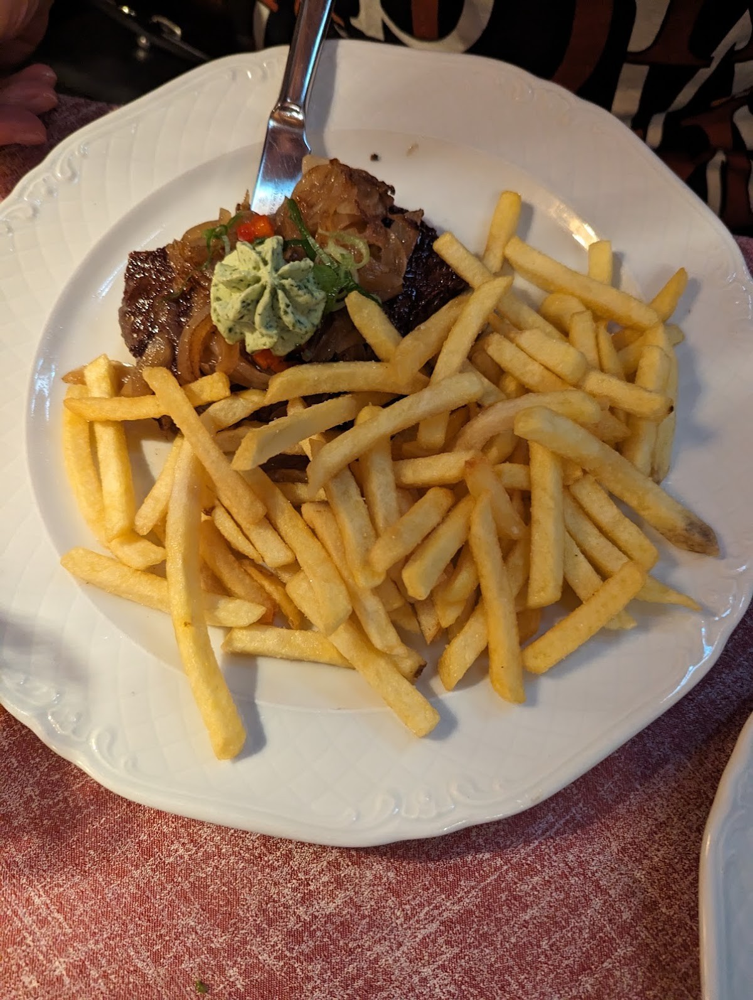
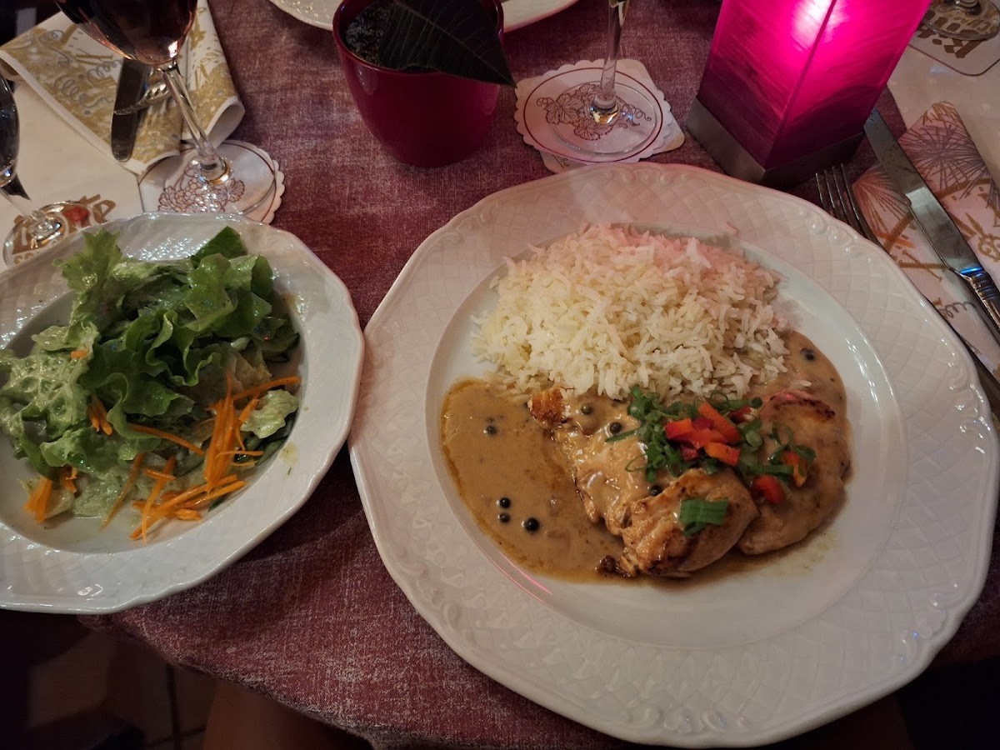
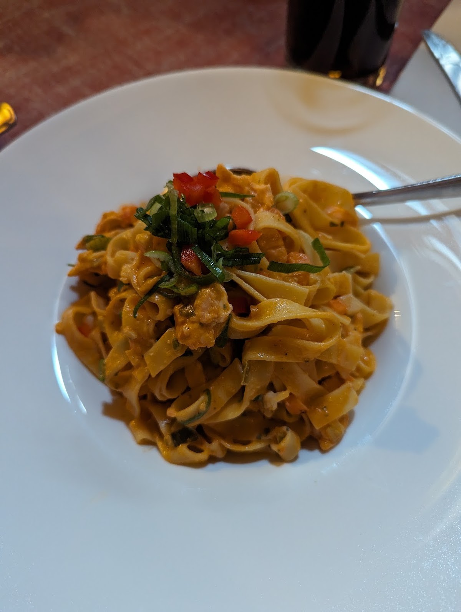
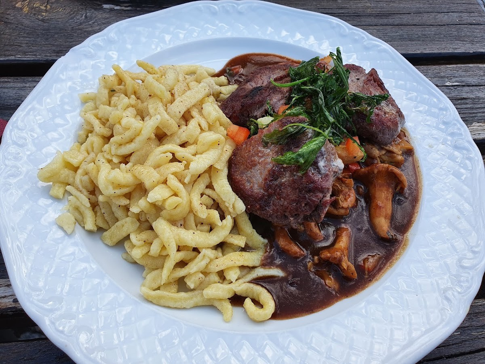
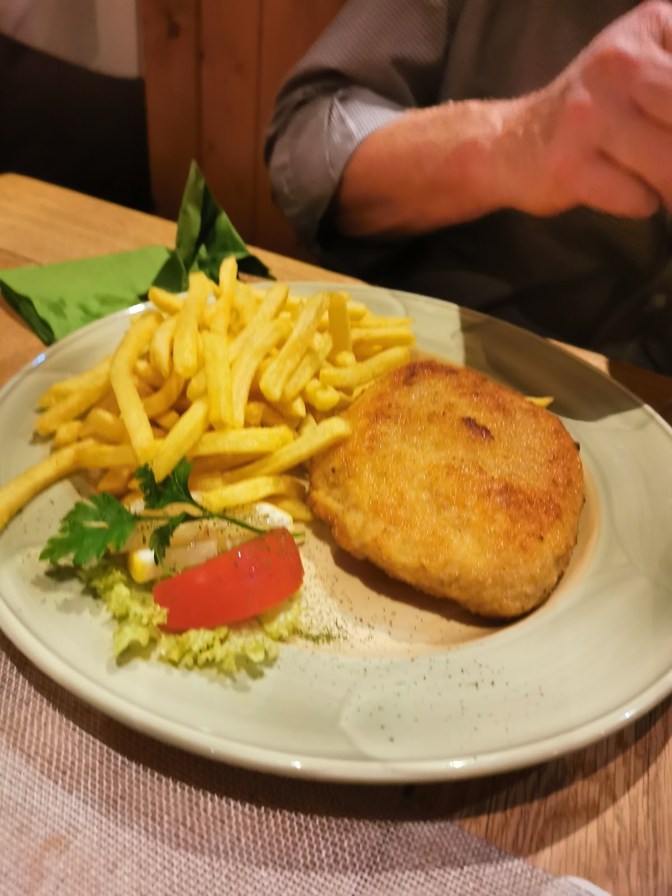
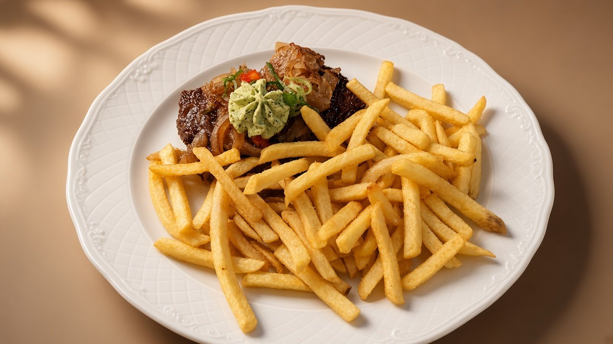
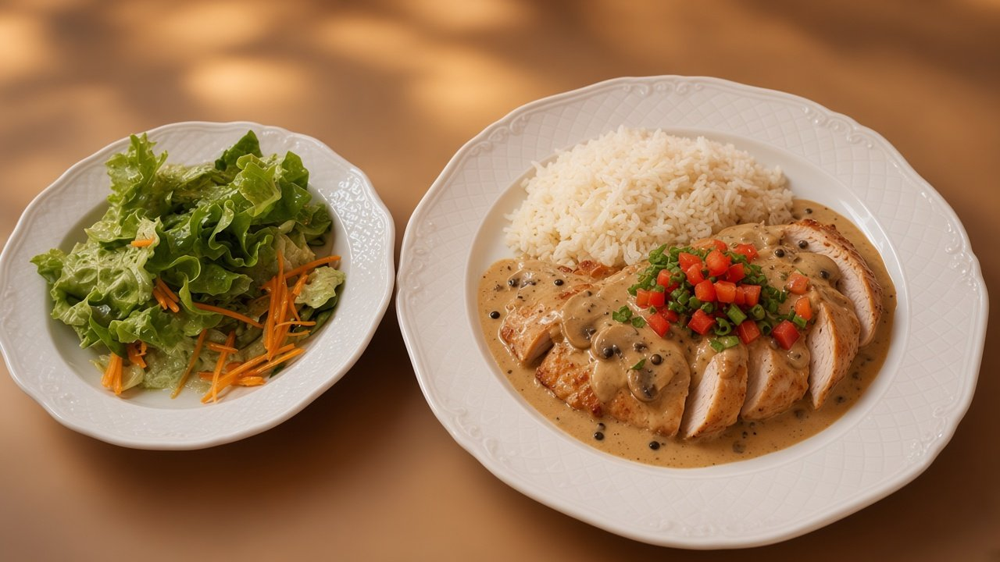
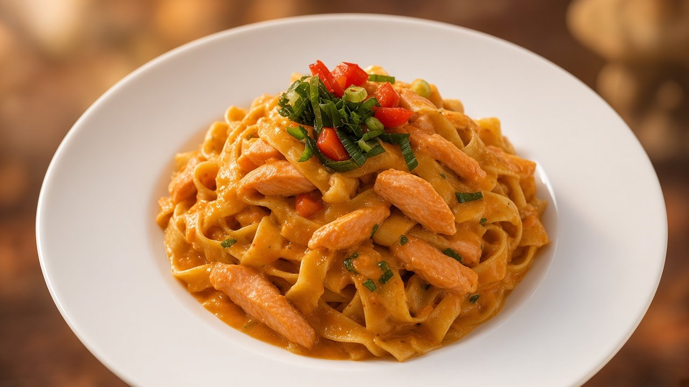
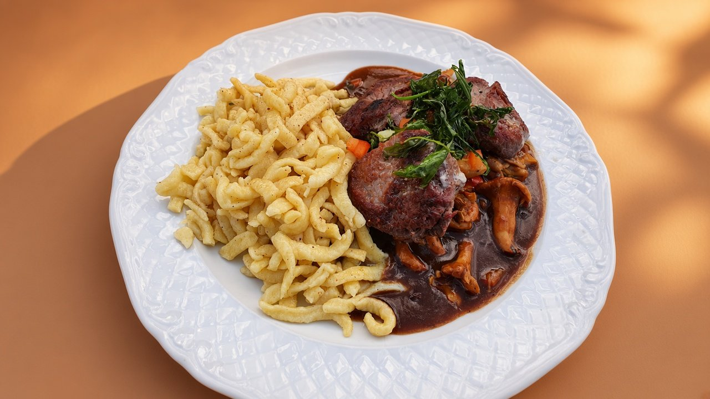
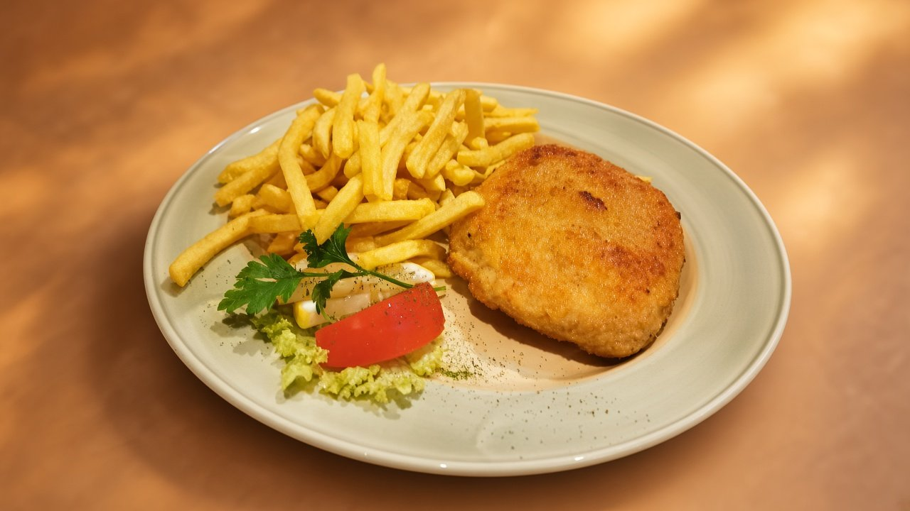

Google-Maps-Nutzerfoto (visueller Match) Rumpsteak mit Kräuterbutter und Pommes frites29,50 € Hauptgänge
Google-Maps-Nutzerfoto (visueller Match) Putenbrustfilet gebraten an Champignonrahm mit Duftreis und Salat21,50 € Hauptgänge
Google-Maps-Nutzerfoto (visueller Match) Lachsfiletstreifen mit Bandnudeln in Tomaten-Gemüse-Knoblauchsoße21,90 € Fisch-Gericht
Google-Maps-Nutzerfoto (visueller Match) Medaillons vom Schweinefilet mit Pfifferlingen in Rahm und Spätzle (Saisonkarte)24,90 € Saisonkarte Pfifferlinge
Google-Maps-Nutzerfoto (visueller Match) Schnitzel „Wiener Art“ mit Pommes frites17,50 € Hauptgänge
KI-generiertes Sample, keine Garantie Rumpsteak mit Kräuterbutter und Pommes frites29,50 € Hauptgänge
KI-generiertes Sample, keine Garantie Putenbrustfilet gebraten an Champignonrahm mit Duftreis und Salat21,50 € Hauptgänge
KI-generiertes Sample, keine Garantie Lachsfiletstreifen mit Bandnudeln in Tomaten-Gemüse-Knoblauchsoße21,90 € Fisch-Gericht
KI-generiertes Sample, keine Garantie Medaillons vom Schweinefilet mit Pfifferlingen in Rahm und Spätzle (Saisonkarte)24,90 € Saisonkarte Pfifferlinge
KI-generiertes Sample, keine Garantie Schnitzel „Wiener Art“ mit Pommes frites17,50 € Hauptgänge